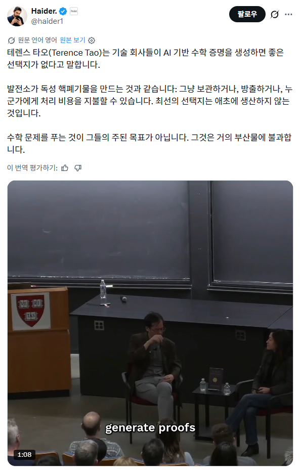

OpenAI, 앤트로픽, 구글 3개회사가 150년 수학난제 18개를 5일만에 전부 풀어버림.
테렌스 타오 (수학 필즈상 수상자)는 "AI 수학증명은 아무 의미 없는 핵폐기물"이라고 극대노 중

OpenAI, 앤트로픽, 구글 3개회사가 150년 수학난제 18개를 5일만에 전부 풀어버림.
테렌스 타오 (수학 필즈상 수상자)는 "AI 수학증명은 아무 의미 없는 핵폐기물"이라고 극대노 중
쟤네 입장에서 AI가 풀어 놓은 물건들이
우리가 스팀 들어가서 AI슬롭 게임 목록 보는 기분인걸까?
비슷한 기분이면 좀 이해가 될거 같기도
쟤는 머 밑도끝도 없이 찡찡대던 인간이라 딱히
그리고 ai가 난제 풀기 시작한지 아직 3개월도 안됐는데 아무튼 풀었다도르 취급하는게 맞는거냐? 확률적 앵무새 취급한게 2년전인데? 인간이 ai한테 배우든 대가리에 칩을 박고 따라잡든 더 발전할 상황이 됐는데도 아무튼 풀었다도르ㅋㅋ
여기 타오랑 뇌동기화된 애들만 있어서그래~ 화자의 의도파악 자기확신이 우주끝까지 닿음.
원래 인류의
의리없는 의리게임은
유구한 전통이었음
4색정리랑 비슷하네. 컴퓨터로 되는 건 아는데 그렇다고 도움되는 건 없음. 4색이면 다 정리할 수 있구나 이게 끝.
리만가설 참이라고 증명했다로 끝나면 전기 먹는 코드 뭉치가 나열된 것일뿐.
만약 그 안에 새 분야로 발전될 아이디어나 방법이 있다면 진짜 도움되는 거겠네
수학자들이 하는 말에 대해서 이 댓글이 읽어본 댓글중에 젤 비슷하다고 생각함
문제 해결 능력을 키우기위해서 계속 연구하는건데 냅다 풀어놓고는 왜 풀린건지 설명은 못해주는 꼴이니 + '검증전이라' 수학지식이라 판별할수없다라는거지
애초에 리만가설 실응용 사례가 참이라고 이미 가정하고 쓰는중이라 증명된거 자체만으로는 역시 참이네 ㅇㅇ 하는거 말곤 뭔가 달라지는건 없긴하지 ㅋㅋ
지들이 몇백년 박아도 못풀던거 다 풀어주는데 고마워하지는 못할망정 ㅋㅋㅋ
이래서 시대 적응 못하는 늙은 학자들은 빨리 퇴출시켜야함
왜 여기서 테렌스타오랑 일반인들 생각에 괴리가 생기는지알겠다. 난제를 푸는과정에서의 부산물이어쩌구 이거 다 개소리임. 테렌스타오도알고있음. 푸는데 필요한 토큰비용도 개소린거 테렌스타오도 다알고있을거임.
그냥 테렌스타오<< 이새끼는 그냥 수학 난제가 존나 재밌는 퍼즐이고 수학자체가 좋은놈이었던거임. 그래서 스도쿠 풀듯이 그냥 저 난제에 대해 고민하고 푸는 그과정이 좋았을뿐인데 그걸 AI가 계속 풀어내는거임. 상상해봐 스도쿠 문제집을 샀는데 옆에서 이상한놈이와서 AI로 내스도쿠 문제를 다푸는거임 그럼 나같아도 허탈하고 개빡침. 근데 그건 테렌스타오의 잘못도있음. 수학난제는 수학자들의 재미를 위해서 있는게아님.
신규보스나오면 대가리박아서 첫클 노리는 랭커인데 갑자기 핵 딸깍도 공식기록으로 인정해준다하면 빡치지
천재가 범부가 되는 순간인가
알파고 나오고선 인간의 바둑 실력이 상승했다. 인류적으로보면 나쁠거 없음.
풀었는지를 모르니까 폐기물이지